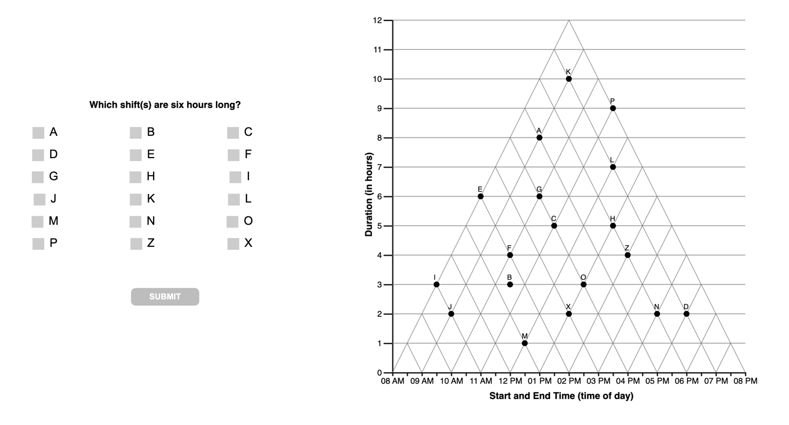

CODE
library(codebook) #data dictionary
library(kableExtra) #tables
library(tidyverse) #ALL THE THINGS
#set some output options
library(dplyr, warn.conflicts = FALSE)
options(dplyr.summarise.inform = FALSE)
options(scipen=1, digits=3)Study SGC4A | 1 Introduction
In Study 4A we explore the extent to which the design of the axes and gridlines of the graph influence how a reader interprets its underlying coordinate system.
 |
Orthogonal-Full Demo: 111 |
 |
Orthogonal-Sparse Demo: 114 |
| Orthogonal-Grid Demo: 115 |
|
 |
Triangular-Sparse Demo: 113 |
library(codebook) #data dictionary
library(kableExtra) #tables
library(tidyverse) #ALL THE THINGS
#set some output options
library(dplyr, warn.conflicts = FALSE)
options(dplyr.summarise.inform = FALSE)
options(scipen=1, digits=3)# HACK WD FOR LOCAL RUNNING?
# imac = "/Users/amyraefox/Code/SGC-Scaffolding_Graph_Comprehension/SGC-X/ANALYSIS/MAIN"
# mbp = "/Users/amyfox/Sites/RESEARCH/SGC—Scaffolding Graph Comprehension/SGC-X/ANALYSIS/MAIN"
# setwd(mbp)
#IMPORT DATA
df_subjects <- read_rds('analysis/SGC4A/data/1-study-level/sgc4a_participants.rds')title = "Participants by Condition"
cols = c("Condition","n")
cont <- table(df_subjects$pretty_condition)
cont %>% addmargins() %>% kbl(caption = title, col.names = cols) %>% kable_classic()| Condition | n |
|---|---|
| Orth-Full | 150 |
| Orth-Sparse | 115 |
| Orth-Grid | 121 |
| Tri-Sparse | 152 |
| Sum | 538 |
Experimental Hypothesis:
We hypothesize that the design of the major axes (specifically orthogonal) axes establish for the learner the basis of the coordinate system. Differently oriented axes should lead the reader to be more open to alternative coordinate systems.
Exploratory Questions
We employed a mixed design with 1 between-subjects factor with 4 levels (Graphical Framework: ORTH-FULL, ORTH-SPARSE, ORTH-GRID, TRI-SPARSE) and 15 items (within-subjects factor).
Independent Variables:
Dependent Variables:
Stimuli consisted of a series of 15 graph comprehension questions, each testing a different combination of time interval relations, to be read from a Triangular-Model graph. Figure 19.1. The list of questions can be found here.

Participants completed the study via a web-browser.
(1) Upon starting, they submitted informed consent, before reading task instructions.
(2) Participants were introduced to a scenario in which they were to play the role of a project manager, scheduling shifts for a group of employees. The schedule of the employees was presented in a TriangularModel (TM) graph, and they would be answering question about the schedule.
(3) Then participants completed an experimental block of 15 items : the Graph Comprehension Task
(4) Following the experimental block, participants answered a free-response question about their strategy for reading the graph, followed by a demographic questionnaire and debrief.
Data were collected by convenience sample of a university subject pool during the winter of 2022. Participants accessed the study via a web browser (asynchronously). The stimulus application required the participant stay in full-screen mode for the entirety of the study.
Data were collected via a custom web application and stored in a NoSQL database. The following exclusion criteria were applied during data cleaning:
| Pre-Requisite | Followed By |
|---|---|
| winter2022_clean_sgc4a.Rmd | 2_sgc4A_scoring.qmd |
The underlying data structure of the stimulus web application changed across the data collection period, resulting in slightly different data files (i.e. columns are not named consistently). In this section, we combine the files from each data collection period into a single harmonized data file for analysis (one for participants, one for items).
First we import participant-level data, selecting only the columns relevant for analysis. The result is a single data frame df_subjects containing one row for each subject (across all periods). Note that we are not discarding any response data. Rather, we discard columns that are automatically recorded by the stimulus web application and help the application run.
Note that we discard some columns representing scores calculated in the stimulus engine. These scores were calculated differently across collection periods, and so we discard them and recalculate scores in the next analysis notebook. No raw data (responses and response times) are discarded, only algorithmically-derived scores for the responses.
#IMPORT PARTICIPANT DATA
# HACK WD FOR LOCAL RUNNING?
# imac = "/Users/amyraefox/Code/SGC-Scaffolding_Graph_Comprehension/SGC-X/ANALYSIS/MAIN"
# # # mbp = "/Users/amyfox/Sites/RESEARCH/SGC—Scaffolding Graph Comprehension/SGC-X/ANALYSIS/MAIN"
# setwd(imac)
#set datafiles
fall17 <- "analysis/SGC4A/data/0-session-level/fall17_sgc4a_participants.csv"
spring18 <- "analysis/SGC4A/data/0-session-level/spring18_sgc4a_participants.csv"
winter22 <- "analysis/SGC4A/data/0-session-level/winter22_sgc4a_participants.rds"
summer22 <- "analysis/SGC4A/data/0-session-level/su22_sgc4a_participants.rds"
#read datafiles, set mode and term
df_subjects_fall17 <- read_csv(fall17) %>% mutate(mode = "lab-synch", term = "fall17")
df_subjects_spring18 <- read_csv(spring18) %>% mutate(mode = "lab-synch", term = "spring18")
df_subjects_winter22 <- read_rds(winter22) #use RDS file as it contains metadata
df_subjects_summer22 <- read_rds(summer22) #use RDS file as it contains metadata
#SAVE METADATA FROM WINTER, but no rows
df_subjects <- df_subjects_winter22 %>% filter(condition=='X') %>%
dplyr::select(
subject,condition,pretty_condition, term,mode,
gender,age,language, schoolyear, country,
effort,difficulty,confidence,enjoyment,other,
totaltime_m,
# absolute_score, #drop absolute score as this is re-scored [though should be the same]
#exploratory factors
violations, browser, width, height
)
#reduce data collected using OLD webapp to useful columns
df_subjects_before <- rbind(df_subjects_fall17, df_subjects_spring18) %>%
#rename and summarize some columns
mutate(
totaltime_m = totalTime / 1000 / 60,
absolute_score = triangular_score,
language = native_language,
gender = sex,
schoolyear = year) %>%
#create placeholders for cols not collected until NEW webapp [for later rbind]
mutate(
condition = as.factor(condition),
pretty_condition = "NULL",
effort = "NULL",
difficulty = "NULL",
confidence = "NULL",
enjoyment = "NULL",
other = "NULL",
disability = "NULL",
violations = "NULL",
browser = "NULL",
width = "NULL",
height = "NULL"
) %>%
#select only columns we'll be analyzing, discard others
dplyr::select(subject, condition, pretty_condition, term, mode,
#demographics
gender, age, language, schoolyear, country,
#placeholder effort survey
effort, difficulty, confidence, enjoyment,
#placeholder misc
other, disability,
#response characteristics
totaltime_m,
# absolute_score, #drop absolute score as this is re-scored [though should be the same]
#exploratory factors
violations, browser, width, height)
#save 'explanation' columns from winter22, which is actually a response to a free response item (Q16); was recorded with item_level data in old webapp
df_winter22_q16 <- df_subjects_winter22 %>%
dplyr::select(subject, condition, pretty_condition, term , mode, explanation) %>%
mutate(
q = 16,
response = explanation
) %>% dplyr::select(-explanation)
#reduce data collected using NEW webapp to useful columns
df_subjects_winter22 <- df_subjects_winter22 %>%
mutate(score = absolute_score) %>%
#select only columns we'll be analyzing, discard others
dplyr::select( subject, condition, pretty_condition, term, mode,
#demographics
gender, age, language, schoolyear, country,
#effort survey
effort, difficulty, confidence, enjoyment,
#explanations
other,disability,
#response characteristics
totaltime_m,
# absolute_score, #drop absolute score as this is re-scored [though should be the same]
#exploratory factors
violations, browser, width, height)
df_subjects_summer22 <- df_subjects_summer22 %>%
mutate(score = absolute_score) %>%
#select only columns we'll be analyzing, discard others
dplyr::select( subject, condition, pretty_condition, term, mode,
#demographics
gender, age, language, schoolyear, country,
#effort survey
effort, difficulty, confidence, enjoyment,
#explanations
other,disability,
#response characteristics
totaltime_m,
# absolute_score, #drop absolute score as this is re-scored [though should be the same]
#exploratory factors
violations, browser, width, height)
effort_labels <- c("I tried my best on each question", "I tried my best on most questions")
#compare dataframe columns
# janitor::compare_df_cols(df_subjects, df_subjects_winter22, df_subjects_before)
#combine dataframes from old and new webapps
df_subjects <- rbind(df_subjects, df_subjects_winter22, df_subjects_summer22, df_subjects_before) %>%
#refactor factors
mutate (
subject = factor(subject),
condition = factor(condition),
pretty_mode = recode_factor(mode, "lab-synch" = "laboratory", "asynch" = "online-replication"),
term = factor(term, levels= c("fall17","spring18","fall21","winter22","summer22")),
mode = factor(mode, levels=c("lab-synch","asynch")),
gender = factor(gender),
schoolyear = factor(schoolyear, levels=c("First","Second","Third","Fourth","Fifth","Other"))
)
#FIX METADATA
#Add metadata for columns that lost it [factors, for some reason!]
var_label(df_subjects$subject) <- "ID of subject (randomly assigned in stimulus app)."
var_label(df_subjects$condition) <- "ID indicates randomly assigned condition (111 -> control, 121 -> impasse)."
var_label(df_subjects$term) <- "indicates if session was run with experimenter present or asynchronously"
var_label(df_subjects$mode) <- "indicates mode in which the participant completed the study"
var_label(df_subjects$gender) <- "What is your gender identity?"
var_label(df_subjects$schoolyear) <- "What is your year in school?"
#REFACTOR CONDITIONS
df_subjects <- df_subjects %>% mutate(
condition = recode_factor(condition, "11111" = "111", "112" = "112", "111" = "111", "113" = "113", "114" = "114", "115"="115"),
pretty_condition = recode_factor(condition, "111" = "Orth-Full", "114" = "Orth-Sparse", "115"="Orth-Grid","113"="Tri-Sparse"),
pretty_mode = recode_factor(mode, "lab-synch" = "laboratory", "asynch" = "online-replication")
)
#CLEANUP
rm(df_subjects_fall17, df_subjects_spring18, df_subjects_winter22,df_subjects_before, df_subjects_summer22)
rm(fall17,spring18,winter22, summer22)
#FINALLY DROP CONDITION 112 (partial orthog with y axis lines extending only to right end of triangle)
#this was an incomplete [pilot only] condition collected in FA17 SP18 for pilot purposes
df_subjects <- df_subjects %>% filter(condition != "112") %>%
mutate(
condition = droplevels(condition),
pretty_condition = droplevels(pretty_condition)
)Next we import item-level data from each data collection period, selecting only the columns relevant for analysis. The result is a single data frame df_items containing one row for each graph comprehension task question (qs=15) (across all periods). A second data frame df_freeresponse contains one row for each free response strategy question (last question posed to participants in Winter2022) Note that we do not discard any response data. Rather, we do discard several columns representing accuracy scores for responses that were calculated in the stimulus engine. These scores were calculated differently across collection periods, and so we discard them and recalculate scores in the next analysis notebook. Original response data are always preserved.
# HACK WD FOR LOCAL RUNNING?
# imac = "/Users/amyraefox/Code/SGC-Scaffolding_Graph_Comprehension/SGC-X/ANALYSIS/MAIN"
# # #mbp = "/Users/amyfox/Sites/RESEARCH/SGC—Scaffolding Graph Comprehension/SGC-X/ANALYSIS/MAIN"
# setwd(imac)
#set datafiles
fall17 <- "analysis/SGC4A/data/0-session-level/fall17_sgc4a_blocks.csv"
spring18 <- "analysis/SGC4A/data/0-session-level/spring18_sgc4a_blocks.csv"
winter22 <- "analysis/SGC4A/data/0-session-level/winter22_sgc4a_items.rds"
summer22 <- "analysis/SGC4A/data/0-session-level/su22_sgc4a_items.rds"
#read datafiles, set mode and term
df_items_fall17 <- read_csv(fall17) %>% mutate(mode = "lab-synch", term = "fall17")
df_items_spring18 <- read_csv(spring18) %>% mutate(mode = "lab-synch", term = "spring18")
df_items_winter22 <- read_rds(winter22) #use RDS file as it contains metadata
df_items_summer22 <- read_rds(summer22) #use RDS file as it contains metadata
#get mapping being question # and interval relation the question tests, that is encoded only in the winter22 data files
map_relations <- df_items_winter22 %>% group_by(q) %>% select(q,relation) %>% unique()
#SAVE METADATA FROM WINTER, but no rows
df_items <- df_items_winter22 %>% filter(condition=='X') %>% select(
subject,condition,term,mode,
question, q, answer, correct, rt_s
)
#reduce data collected using old webapp
df_items_before <- rbind(df_items_fall17, df_items_spring18) %>%
mutate(rt_s = rt / 1000, correct = as.logical(correct)) %>%
select(subject, condition, term, mode, question, q, answer, correct, rt_s)
#reduce data collected using new webapp
df_items_winter22 <- df_items_winter22 %>%
select(subject, condition, term, mode, question, q, answer, correct, rt_s) %>% #unfactor before combine
mutate(
subject = as.character(subject),
condition = as.character(condition),
term = as.character(term),
mode = as.character(mode),
q = as.integer(q),
correct = as.logical(correct)
)
df_items_summer22 <- df_items_summer22 %>%
select(subject, condition, term, mode, question, q, answer, correct, rt_s) %>% #unfactor before combine
mutate(
subject = as.character(subject),
condition = as.character(condition),
term = as.character(term),
mode = as.character(mode),
q = as.integer(q),
correct = as.logical(correct)
)
#combine dataframes from old and new webapps
df_items <- rbind(df_items, df_items_winter22, df_items_summer22, df_items_before) %>%
#refactorize columns
mutate(
subject = factor(subject),
condition = factor(condition),
term = factor(term, levels= c("fall17","spring18","fall21","winter22","summer22")),
mode = factor(mode, levels=c("lab-synch","asynch")),
q = as.integer(q)) %>%
#rename answer column to RESPONSE
rename(response = answer) %>%
#remove all commas and make as character string
mutate(
response = str_remove_all(as.character(response), ","),
num_o = str_length(response)
) %>%
# handle NA values (why are some empty responses blank and others NA?)
mutate(
response = replace_na(response, ""),
num_o = replace_na(num_o, 0)
)
#FIX METADATA
#Add metadata for columns that lost it [factors, for some reason!]
var_label(df_items$subject) <- "ID of subject (randomly assigned in stimulus app)."
var_label(df_items$condition) <- "ID indicates randomly assigned condition (111 -> control, 121 -> impasse)."
var_label(df_items$term) <- "indicates if session was run with experimenter present or asynchronously"
var_label(df_items$mode) <- "indicates mode in which the participant completed the study"
var_label(df_items$q) <- "Question Number (in order)"
var_label(df_items$correct) <- "Is the response (strictly) correct? [dichotomous scoring]"
var_label(df_items$response) <- "options (datapoints) selected by the subject"
var_label(df_items$num_o) <- "number of options selected by the subject"
#HANDLE FREE RESPONSE QUESTION #16
#save `free response` Q#16 in its own dataframe
df_freeresponse <- df_items %>% filter(q == 16) %>% select(-question,-correct,-rt_s,-num_o)
#add data from wi22 [stored on subject data]
df_winter22_q16 <- df_winter22_q16 %>% dplyr::select(-pretty_condition)
df_freeresponse <- rbind(df_freeresponse, df_winter22_q16)
#add question description
df_freeresponse <- df_freeresponse %>% mutate(
question = "Please describe how to determine what event(s) start at 12pm?",
response = as.character(response) #doesn't need to be factor
)
#remove 'free response' Q#16 from df_items
df_items <- df_items %>% filter (q != 16)
#REFACTOR CONDITIONS
df_items <- df_items %>% mutate(
condition = recode_factor(condition, "11111" = "111", "112" = "112", "111" = "111", "113" = "113", "114" = "114", "115"="115"),
pretty_condition = recode_factor(condition, "111" = "Orth-Full", "114" = "Orth-Sparse", "115"="Orth-Grid","113"="Tri-Sparse"),
pretty_mode = recode_factor(mode, "lab-synch" = "laboratory", "asynch" = "online-replication")
)
#CLEANUP
rm(df_items_fall17, df_items_spring18, df_items_winter22, df_items_before, df_winter22_q16, df_items_summer22)
rm(fall17,spring18,winter22, map_relations, summer22)
#FINALLY DROP CONDITION 112 (partial orthog with y axis lines extending only to right end of triangle)
#this was an incomplete [pilot only] condition collected in FA17 SP18 for pilot purposes
df_items <- df_items %>% filter(condition != "112") %>%
mutate(
condition = droplevels(condition),
pretty_condition = droplevels(pretty_condition)
)Next, we validate that we have the complete number of item-level records based on the number of subject-level records
#the number of items should be equal to 15 x the number of subjects
nrow(df_items) == 15* nrow(df_subjects) #TRUE[1] TRUE#each subject should have 15 items
df_items %>% group_by(subject) %>% summarise(n = n()) %>% filter(n != 15) %>% nrow() == 0[1] TRUEFinally, we export the (session-harmonized) data for analysis, as CSVs, and .RDS (includes metadata)
# HACK WD FOR LOCAL RUNNING?
# imac = "/Users/amyraefox/Code/SGC-Scaffolding_Graph_Comprehension/SGC-X/ANALYSIS/MAIN"
# # mbp = "/Users/amyfox/Sites/RESEARCH/SGC—Scaffolding Graph Comprehension/SGC-X/ANALYSIS/MAIN"
# setwd(imac)
#SAVE FILES
write.csv(df_subjects,"analysis/SGC4A/data/1-study-level/sgc4a_participants.csv", row.names = FALSE)
write.csv(df_items,"analysis/SGC4A/data/1-study-level/sgc4a_items.csv", row.names = FALSE)
write.csv(df_freeresponse,"analysis/SGC4A/data/1-study-level/sgc4a_freeresponse.csv", row.names = FALSE)
#SAVE R Data Structures
#export R DATA STRUCTURES (include codebook metadata)
rio::export(df_subjects, "analysis/SGC4A/data/1-study-level/sgc4a_participants.rds") # to R data structure file
rio::export(df_items, "analysis/SGC4A/data/1-study-level/sgc4a_items.rds") # to R data structure filesessionInfo()R version 4.2.1 (2022-06-23)
Platform: x86_64-apple-darwin17.0 (64-bit)
Running under: macOS Big Sur ... 10.16
Matrix products: default
BLAS: /Library/Frameworks/R.framework/Versions/4.2/Resources/lib/libRblas.0.dylib
LAPACK: /Library/Frameworks/R.framework/Versions/4.2/Resources/lib/libRlapack.dylib
locale:
[1] en_US.UTF-8/en_US.UTF-8/en_US.UTF-8/C/en_US.UTF-8/en_US.UTF-8
attached base packages:
[1] stats graphics grDevices utils datasets methods base
other attached packages:
[1] forcats_0.5.1 stringr_1.4.0 dplyr_1.0.9 purrr_0.3.4
[5] readr_2.1.2 tidyr_1.2.0 tibble_3.1.7 ggplot2_3.3.6
[9] tidyverse_1.3.1 kableExtra_1.3.4 codebook_0.9.2
loaded via a namespace (and not attached):
[1] Rcpp_1.0.8.3 svglite_2.1.0 lubridate_1.8.0 assertthat_0.2.1
[5] digest_0.6.29 utf8_1.2.2 R6_2.5.1 cellranger_1.1.0
[9] backports_1.4.1 reprex_2.0.1 labelled_2.9.1 evaluate_0.15
[13] httr_1.4.3 highr_0.9 pillar_1.7.0 rlang_1.0.3
[17] curl_4.3.2 readxl_1.4.0 data.table_1.14.2 rstudioapi_0.13
[21] rmarkdown_2.14 webshot_0.5.3 foreign_0.8-82 htmlwidgets_1.5.4
[25] bit_4.0.4 munsell_0.5.0 broom_0.8.0 compiler_4.2.1
[29] modelr_0.1.8 xfun_0.31 pkgconfig_2.0.3 systemfonts_1.0.4
[33] htmltools_0.5.2 tidyselect_1.1.2 rio_0.5.29 fansi_1.0.3
[37] viridisLite_0.4.0 crayon_1.5.1 tzdb_0.3.0 dbplyr_2.2.1
[41] withr_2.5.0 grid_4.2.1 jsonlite_1.8.0 gtable_0.3.0
[45] lifecycle_1.0.1 DBI_1.1.3 magrittr_2.0.3 scales_1.2.0
[49] zip_2.2.0 cli_3.3.0 stringi_1.7.6 vroom_1.5.7
[53] fs_1.5.2 xml2_1.3.3 ellipsis_0.3.2 generics_0.1.2
[57] vctrs_0.4.1 openxlsx_4.2.5 tools_4.2.1 bit64_4.0.5
[61] glue_1.6.2 hms_1.1.1 parallel_4.2.1 fastmap_1.1.0
[65] yaml_2.3.5 colorspace_2.0-3 rvest_1.0.2 knitr_1.39
[69] haven_2.5.0